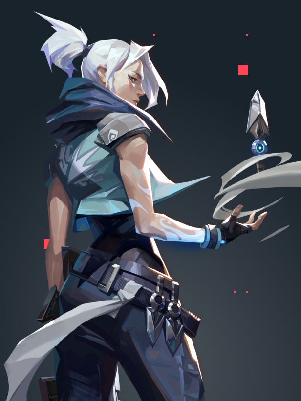

烟雾掩护与快速进点
瞬云 + 逐风 · 技能应用案例（非历史战绩）
- 用短暂烟雾遮挡视线，结合突进调整位置。
- 求职表达：能够快速进入工作现场，后续协作请队友及时跟进。

决斗特工 · 突击突破 / 高机动交战, 无畏契约 / VALORANT
来自韩国的决斗特工，战斗风格灵活、迅捷，擅长利用机动能力采取冒险行动，并在交战中出其不意地攻击对手。
自我介绍（趣味改写）：擅长把“这里进不去”变成“我已经进去了”。移动办公经验丰富，办公地点包括半空。
本页为捷风官方设定的简历形式改写，用于建站演示。身份与技能依据 Riot 官方资料；岗位描述和技能案例为演示用改写，不是官方履历、角色台词或真实战绩。
烟雾掩护与快速进点
瞬云 + 逐风 · 技能应用案例（非历史战绩）
垂直机动与交战角度
凌空 + 飘移 · 技能应用案例（非历史战绩）
飞刀交战
飓刃 · 技能应用案例（非历史战绩）